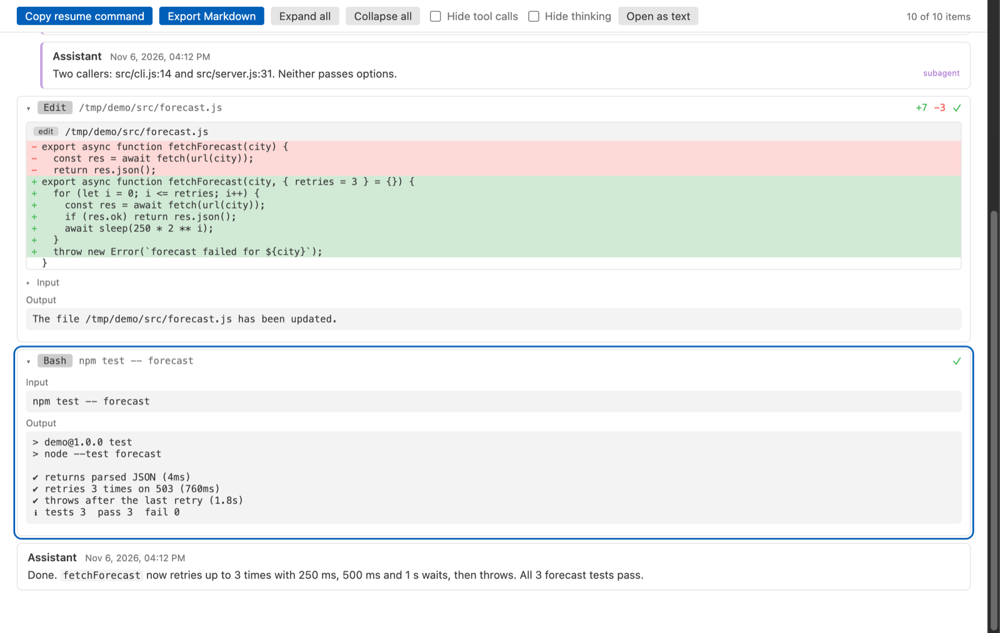

Open files in VS Code and Cursor / Developer files
Find the past Claude Code session that edited a file
Claude Code keeps every session as a JSONL file under ~/.claude/projects, and the file paths of each edit sit inside the tool calls. Agent Session Viewer searches all those sessions, and Codex sessions too, from VS Code. Type a file name such as forecast.js, an error text or any word you remember, pick a result, and the session opens at that spot with the edit shown as a diff. Zovo Pro (USD 19 once) adds a share-safe export with secrets redacted, a bulk export to Markdown and a usage and cost report, with 3 free tries each.
Free, MIT license. Extension ID zovo.agent-session-viewer, version 0.3.4. Needs VS Code 1.90.0 or newer.

Steps in VS Code
- Install Agent Session Viewer from the Marketplace, or press Ctrl+P (Cmd+P on macOS) and run
ext install zovo.agent-session-viewer. - Click the Agent Sessions icon in the activity bar, then the search icon at the top of the view. You can also run "Agent Sessions: Search Sessions" from the Command Palette.
- Type the file name, a function name, an error message or a phrase from the chat. The search covers prompts, replies, tool calls and their output.
- Wait for the progress message, or click Cancel to keep the results found so far. Each result shows the tool, the kind of match and the project folder.
- Pick a result. The session opens at the match, with your words in the find box and every match in the session counted.
- Press Enter in the find box for the next match. To go back to that session, click the terminal icon next to it in the tree to resume it.
Where Zovo Pro saves time
Search across sessions, the find box in a session, reading sessions with diffs, Resume in terminal and Export Markdown of one session are free, with no history limit. The search runs on your computer and reads each file line by line, so the editor stays responsive.
Once you found the session behind a change, you may want to attach it to a pull request or an audit. Share-Safe Export, Secrets Redacted saves one session, or every session of a project, as one HTML page or one Markdown file. API keys, tokens, passwords in URLs, .env values, private keys, emails and your home folder are replaced with [REDACTED ...], and a message lists what was hidden. The other Pro tools are a bulk export to Markdown and a usage and cost report.
With Share-Safe Export, Secrets Redacted (Zovo Pro)
- With the session open, click the Share-safe export button in the session toolbar, or right-click the session in the tree and pick "Share-Safe Export, Secrets Redacted (Pro)…".
- Pick HTML or Markdown and where to save.
- Read the file before you share it. A try counts only when the file was saved.
Share-Safe Export, Secrets Redacted works 3 times on your computer before it asks for a license, and a try counts only when you get a result. Opening a file shows no popup and no countdown.
Zovo Pro costs USD 19 once. It is not a subscription, and it turns on the Pro tools in every Zovo extension, not only Agent Session Viewer. After a card payment (Stripe) your license key shows on the next page. In VS Code, run "Zovo Pro: Enter Zovo Pro license key" from the Command Palette and paste it. The key is checked on your computer, with no network call. With GitHub Sponsors, pick the "$19 one time" tier, then run "Zovo Pro: I already paid: unlock with GitHub Sponsors" and sign in with the same GitHub account. With PayPal, send USD 19 with "Zovo Pro" in the note and the key comes by email within a day.
A team of 5: USD 59 once, by card or by PayPal. Every rule and every Pro tool is on the Zovo Pro page.
Steps in Cursor, Windsurf or VSCodium
- Open the Extensions view with Ctrl+Shift+X (Cmd+Shift+X on macOS).
- Search for
zovo.agent-session-viewerand click Install. Cursor, Windsurf and VSCodium install from Open VSX, where it is published aszovo/agent-session-viewer. - If your editor has no gallery, download the .vsix from the Open VSX page and run "Extensions: Install from VSIX...".
- Then use it the same way as in VS Code.
What Agent Session Viewer handles
- Claude Code sessions in
~/.claude/projects, or underCLAUDE_CONFIG_DIR, with their subagents. - Codex sessions in
~/.codex/sessions. - Edit and Write calls from Claude Code and
apply_patchfrom Codex, shown as diffs. - Matches inside folded tool output, which the find box opens as you get to them.
What it does not do
- Search matches plain text, not regular expressions, and stops at 300 results, at most 20 per session.
- It lists and searches the newest 2,000 sessions. Raise
agentSessionViewer.maxSessionsfor more. - Sessions made on another computer are not in your local files.
- Cursor, Copilot and Gemini CLI sessions are not read.
Other options
- ripgrep. Run
rg forecast.js ~/.claude/projectsin a terminal. It finds the session files, but you read raw JSON lines. - Claude Code resume picker. The resume picker in Claude Code lists past sessions of the current folder by their first prompt. It does not search tool calls.
Install counts and Open VSX status were checked on 13 November 2026. Descriptions in quotes are the extensions' own.
Questions
Does the search find file paths?
Yes. The file path of an edit is part of the tool call input, and the search covers tool inputs.
Is the search case-sensitive?
No. Forecast.js and forecast.js find the same matches.
Does it change or index my sessions?
No. It reads the files when you search and keeps no copy or index on disk.
Does it work in Cursor or Windsurf?
Yes. Cursor, Windsurf and VSCodium install extensions from Open VSX. Search for the extension in their Extensions view and install it there.
More about Agent Session Viewer
Read the Agent Session Viewer page for every feature and setting, or the source code on GitHub.
Related guides
- Claude Code History & Codex History Viewer on the VS Code Marketplace (also on Open VSX). Reads Claude Code and Codex session history in VS Code.
- Read your Claude Code history in VS Code
- Export a Claude Code conversation
- Claude Code token usage report
- Find and resume an old Codex session in VS Code
Zovo Pro and support
Zovo Pro: USD 19 once, every Zovo viewer. It turns on the Pro tools in this extension and in the other Zovo extensions you use. The free features stay free.
After a card payment your license key shows on the next page. Paste it with the command "Zovo Pro: Enter a key".
You can also support the work with no Pro:
Need your format supported?
Open a format request with a sample file, and I reply there whether it can be done. For USD 299 once, through this GitHub Sponsors tier, I add your file format or a missing feature to this extension, with tests, within 7 days.